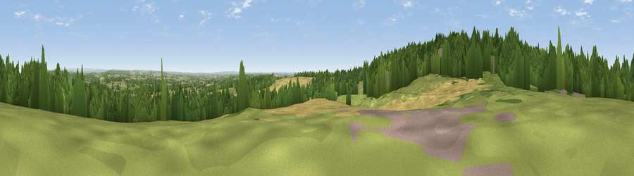

Viewpoint near Hookgate
#23767 in England · top 32% of its area beats it · near HookgateWhere it is
The exact computed spot (SJ 75075 36125). Click the marker for map links.
The view, rendered

A 360° render of this exact spot computed from the terrain model, tree cover and land cover — summer colours, afternoon light, calibrated against photographs of famous viewpoints. Real trees, hedges and buildings will differ in detail.
The panorama
Grey silhouette: terrain skyline in each direction (720 bearings, Earth curvature and refraction included). Dashed green: skyline with trees (+15 m) and buildings (+8 m) as obstacles. Blue strip: how far the ground is visible on each bearing.
Where the view opens
Wedge length = distance to the farthest visible ground on that bearing (vegetation-aware). Rings at 10, 25 and 50 km.
What fills the view
42% woodland · 37% grassland · 19% cropland · 2% built-up
Angular shares of the visible panorama (visual magnitude), not map area. Landscape diversity 0.49 (0–1 Shannon).
Key numbers
More beautiful places nearby
The staircase of upgrades: each row has a higher view potential than everything closer. Driving times are estimates from straight-line distance, calibrated against real road routing — check an actual route before setting out.
| Place | Direction | Drive | Score |
|---|---|---|---|
| Viewpoint near Loggerheads | WNW · 1 km | ~3 min | 51.0 |
| Viewpoint near Aston | NNE · 4 km | ~10 min | 57.5 |
| Woore Hill | NNW · 7 km | ~14 min | 60.1 |
| Bar Hill | N · 8 km | ~16 min | 61.3 |
| Viewpoint near Madeley | N · 8 km | ~16 min | 66.7 |
| Bignall Hill | NNE · 17 km | ~29 min | 75.2 |
| Viewpoint near Marchamley | WSW · 18 km | ~31 min | 77.5 |
| Viewpoint near Mow Cop | NNE · 24 km | ~39 min | 80.2 |
52.92196, -2.37217 · source: screening · position refined by local search. Computed location — check access rights before visiting.